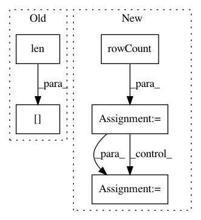

ad202ae0d526f208bfde4ed9ef47190f078be7de,Orange/widgets/data/owselectcolumns.py,OWSelectAttributes,move_rows,#OWSelectAttributes#Any#Any#Any#,414
Before Change
def move_rows(self, view, rows, offset):
model = view.model()
newrows = [min(max(0, row + offset), len(model) - 1) for row in rows]
for row, newrow in sorted(zip(rows, newrows), reverse=offset > 0):
model[row], model[newrow] = model[newrow], model[row]
selection = QItemSelection()
for nrow in newrows:
After Change
def move_rows(self, view: QListView, offset: int, roles=(Qt.EditRole,)):
rows = [idx.row() for idx in view.selectionModel().selectedRows()]
model = view.model() // type: QAbstractItemModel
rowcount = model.rowCount()
newrows = [min(max(0, row + offset), rowcount - 1) for row in rows]
def itemData(index):
return {role: model.data(index, role) for role in roles}
for row, newrow in sorted(zip(rows, newrows), reverse=offset > 0):
d1 = itemData(model.index(row, 0))
d2 = itemData(model.index(newrow, 0))
model.setItemData(model.index(row, 0), d2)
model.setItemData(model.index(newrow, 0), d1)
selection = QItemSelection()
In pattern: SUPERPATTERN
Frequency: 3
Non-data size: 5
Instances
Project Name: biolab/orange3
Commit Name: ad202ae0d526f208bfde4ed9ef47190f078be7de
Time: 2019-12-17
Author: ales.erjavec@fri.uni-lj.si
File Name: Orange/widgets/data/owselectcolumns.py
Class Name: OWSelectAttributes
Method Name: move_rows
Project Name: biolab/orange3
Commit Name: 0fa9c2ab21ebaeb91466f146a43259e8b5b0cd05
Time: 2015-12-04
Author: tankovesna@hotmail.com
File Name: Orange/canvas/report/owreport.py
Class Name: OWReport
Method Name: _build_html
Project Name: biolab/orange3
Commit Name: 2dcfbc69466198929f81fcdb4c5ca06ace7b1d2e
Time: 2015-10-30
Author: tankovesna@hotmail.com
File Name: Orange/canvas/report/owreport.py
Class Name: OWReport
Method Name: _build_html